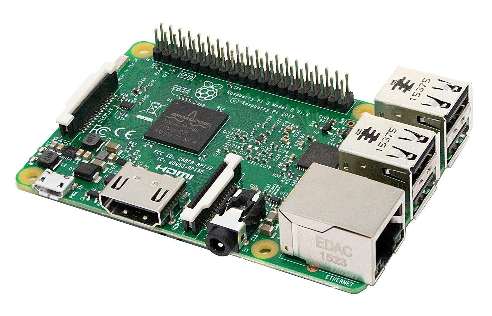

Menu
Logo
Welcome,
User
Dashboard
Close Menu
Overview
News
History
Settings
My Dashboard
HUMIDITY
99
PRESSURE
TEMPERATURE
45
STATUS
SUB UNIT 1

Feeds
Database error.
15 mins
Check transactions.
28 mins
CPU overload.
35 mins
General Stats
CPU Usage
+25%
Memory Usage
50%
Demographic
Language
Country
City
System
Browser
OS
More
Target
Users
Active
Geo
Interests